After studying this chapter, students will be able to
understand Rutherford’s gold foil experiment.
identify the limitations of Rutherford’s model.
explain the main postulates of Bohr’s atomic model.
compare the charge and mass of sub-atomic particles.
calculate number of protons, neutrons and electrons from the given atomic number and mass number of an element.
draw the atomic structure of first 20 elements.
differentiate isotopes, isobars and isotones.
assign valency of various elements based on the number of valence electrons.
recognize the significance of quantum numbers.
state and illustrate the laws of multiple proportion, reciprocal proportion and combining volumes .
Just as a small child wants to take a toy apart to find out what is inside, scientists have for long been curious about the internal structure of an atom. They wanted to find out what are the particles present inside an atom and how are these particles arranged in an atom. For explaining this many scientists proposed various atomic models.
We have learnt Dalton’s atomic theory and J.J. Thomson’s model in class VIII. Now we will learn about sub-atomic particles and the other atomic models to explain how these particles are arranged within an atom.
In 1911, Lord Rutherford, a scientist from New Zealand, performed his famous experiment of bombarding a thin gold foil with very small positively charged particles called alpha particles. He selected a gold foil because, he wanted as thin layer as possible and gold is the most malleable metal.
He observed that:
1. Most of the alpha particles passed straight through the foil.
2. Some alpha particles were slightly deflected from their straight path.
3. Very few alpha particles completely bounced back.
Figure 11.1 Deflected alpha -particle image was given
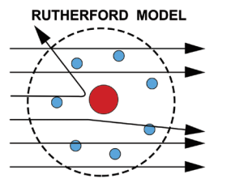
Figure 11.2 Deflection of alpha -particle by a gold leaf image was given below
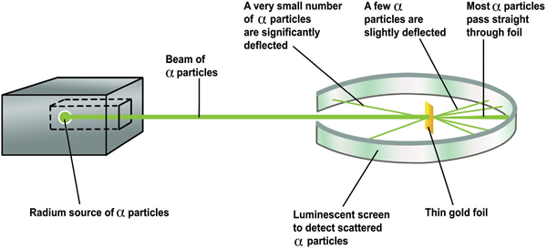
Later, Rutherford generalized these results of alpha particles scattering experiment and suggested a model of the atom that is known as Rutherford’s Atomic model.
According to this model
1. The atom contains large empty space.
2. There is a positively charged mass at the centre of the atom, known as nucleus.
3. The size of the nucleus of an atom is very small compared to the size of an atom.
4. The electrons revolve around the nucleus in close circular paths called orbits.
5. An atom as a whole is electrically neutral, That is, the number of protons and electrons in an atom are equal.
Figure 11.3 Rutherford's model of the atom was some what like that of the solar system image was given below
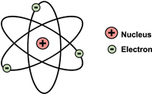
Rutherford’s model of atomic structure is similar to the structure of the solar system. Just as in the solar system, the Sun is at the centre and the planets revolve around it, similarly in an atom the nucleus present at the centre and the electrons revolve around it in orbits or shells.
According to Electromagnetic theory, a moving electron should accelerate and continuously lose energy. Due to the loss of energy, path of electron may reduce and finally the electron should fall into the nucleus. If it happens so, atom becomes unstable. But atoms are stable. Thus, Rutherford’s model failed to explain the stability of an atom.
Figure 11.4 Showing an atom losing energy image was given below
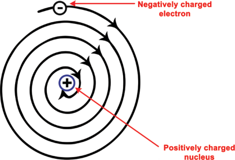
In 1913, Neils Bohr, a Danish physicist, explained the causes of the stability of the atom in a different manner. The main postulates are:
1. In atoms, the electron revolve around the nucleus in stationary circular paths called orbits or shells or energy levels.
2. While revolving around the nucleus in an orbit, an electron neither loses nor gains energy.
3. An electron in a shell can move to a higher or lower energy shell by absorbing or releasing a fixed amount of energy.
4. The orbits or shells are represented by the letters K,L,M,N, so on or the numbers, n = 1,2,3,4 and so on
Figure 11.5 Energy levels around the nucleus of an atom: Bohr's model .image was given below
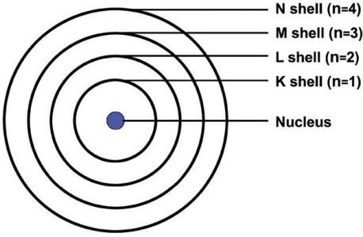
The orbit closest to the nucleus is the K shell. It has the least amount of energy and the electrons present in it are called K electrons, and so on with the successive shells and their electrons. These orbits are associated with fixed amount of energy so Bohr called them as energy level or energy shells.
One main limitation was that this model was applicable only to hydrogen and hydrogen like ions Bracket OPEN example H e plus, L i 2 plus B e 3 plus and so on bracket closed. It could not be extended to multi electron nucleus.
In 1932 James Chadwick observed when Beryllium was exposed to alpha particles, particles with about the same mass as protons were emitted.
Beryllium plus alpha ray gives carbon plus neutron
These emitted particles carried no electrical charges. They were called as neutrons. It is denoted by 0 n1 .The superscript 1 represents its mass and subscript 0 represents its electric charge.
1. This particle was not found to be deflected by any magnetic or electric field, proving that it is electrically neutral.
2. Its mass is equal to 1.676 × 10 power minus 24 g Bracket OPEN 1 amu bracket closed.
In 1920 Rutherford predicted the presence of another particle in the nucleus as neutral. James Chadwick, the inventor of neutron was student of Rutherford box item ends
The atom is built up of a number of subatomic particles. The three sub-atomic particles of great importance in understanding the structure of an atom are electrons, protons and neutrons, the properties of which are given in Table 11.1
Table 11.1 Properties of sub-atomic particles
Particle |
Symbol |
Charge Bracket OPEN electronic units bracket closed |
mass Bracket OPEN amu bracket closed |
mass Bracket OPEN grams bracket closed |
Electron |
e with minus 1 in subscript and superscript 0. |
Minus 1 |
1 by 1837 |
9.1 into 10 power minus 28 |
Proton |
H with subscript 1 and superscript 1 |
plus 1 |
1 |
1.6 into 10 power minus 24 |
Neutron |
n with subscript 0 and superscript 1 |
0 |
1 |
1.6 into 10 power minus 24 |
There are two structural parts of an atom, the nucleus and the empty space in which there are imaginary paths called orbits
Figure 11.6 Showing structure of an atom image was given below
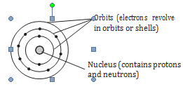
Nucleus: The protons and neutrons [collectively called nucleons] are found in the nucleus of an atom.
Orbits: Orbit is defined as the path, by which electrons revolve around the nucleus
Box item open
Besides the fundamental particles like protons, electrons and neutrons some more particles are discovered in the nucleus of an atom. They include mesons, neutrino, antineutrino, positrons etc. box item ends
Only hydrogen atoms have one proton in their nuclei. Only helium atoms have two protons. Indeed, only gold atoms have 79 protons. This shows that the number of protons in the nucleus of an atom decides which element it is. This very important number is known as the atomic number Bracket OPEN proton number, given the symbol Z bracket closed of an atom.
Atomic number Bracket OPEN Z bracket closed = Number of protons = Number of electrons
Protons alone do not make up all of the mass of an atom. The neutrons in the nucleus also contribute to the total mass. The mass of the electron can be regarded as so small that it can be ignored. As a proton and a neutron have the same mass, the mass of a particular atom depends on the total number of protons and neutrons present. This number is called the mass number Bracket OPEN or nucleon number, given the symbol A bracket closed of an atom.
Mass number = Number of protons plus Number of neutrons
For any element, the atomic numbers are shown as subscripts and mass number are shown as superscripts.
For example, nitrogen is written as N with superscript 14 subscript 7 Image was given below
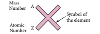
Here 7 is its atomic number and 14 is its mass number.
Box item open
Symbolically represent the following atoms using atomic number and mass number. [Refer table 11.1]
A bracket closed Carbon b bracket closed Oxygen c bracket closed Silicon d bracket closed Beryllium. box item ends
The difference between the mass number of an element and its atomic number gives the number of neutrons present in one atom of the element.
Number of neutrons Bracket OPEN n bracket closed = Mass number Bracket OPEN A bracket closed minus Atomic Number Bracket OPEN Z bracket closed
For example, the number of neutrons in one atom of mg with superscript 24 subscript 12 is
Number of neutrons Bracket OPEN n bracket closed = 24 Bracket OPEN That is A bracket closed minus 12 Bracket OPEN That is Z bracket closed = 12
Box item open
Calculate the number of neutrons in the following atoms:
A bracket closed Al with superscript 27 subscript 13 b bracket closed P with superscript 31 subscript 15
C bracket closed Os with superscript 190 subscript 76
D bracket closed Cr with superscript 54 subscript 24
Box item ends
Box item open
Atomic number is designated as Z why question mark
Z stands for Zahl, which means NUMBER in German.
Z can be called Atom zahl or atomic number A is the symbol recommened in the ACS style guide instead of M Bracket OPEN massenzahl in German bracket closed. Box item ends
Box item open
Calculate the atomic number of an element whose mass number is 39 and number of neutrons is 20. Also find the name of the element.
Solution
Mass Number = Atomic number plus Number of neutrons
Atomic Number = Mass number minus Number of neutrons = 39 minus 20
Atomic Number = 19
Element having atomic number 19 is Potassium Bracket OPEN K bracket closed Box item ends
You already know that electrons occupy different energy levels called orbits or shells. The distribution of electrons in different shells is called electronic configuration. This distribution of electrons is governed by certain rules or conditions, known as Bohr and Bury Rules of electronic configuration.
Rule 1: The maximum number of electrons that can be accommodated in a shell is equal to 2 n power 2 where ‘n’ is the serial number of the shell from the nucleus.
Shell |
Value of Bracket OPEN n bracket closed |
Maximum number of electrons Bracket OPEN 2 n square bracket closed |
K |
1 |
2 into 1 square = 2 |
L |
2 |
2 into 2 square = 8 |
M |
3 |
2 into 3 square = 18 |
N |
4 |
2 into 4 square = 32 |
Rule 2: Shells are filled in a step wise manner in the increasing order of energy.
Rule 3: The outermost shell of an atom cannot have more than 8 electrons even if it has capacity to accomodate more electrons. For example, electronic arrangement in calcium having 20 electrons is,
K L M N
2 8 8 2
What is the Electronic configuration of Aluminium question mark
Solution
Electronic configuration of Aluminium atom:
Bracket OPEN Z = 13bracket closed K shell = 2 L shell = 8 and M shell = 3 electron.
So its electronic configuration is 2, 8, 3
box item ends
The forces between the protons and the neutrons in the nucleus are of special kind called Yukawa forces. This strong force is more powerful than gravity box item ends
Geometric Representation of atomic structure of elements
Knowing the mass number and atomic number of an element we can represent atomic structure.
Geometric Representation of oxygen atom O with superscript 16 subscript 8
Mass number A = 16
Atomic number Z = 8
Number of neutrons = A minus Z = 16 minus 8 = 8
Number of protons = 8
Number of electron = 8
Electronic configuration = 2 comma 6
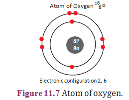
Box item open
Atoms are so tiny their mass number cannot be expressed in grams but expressed in amu Bracket OPEN atomic mass unit bracket closed. New unit is U. Size of an atom can be measured in nano metre Bracket OPEN 1 nm = 10 power minus 9 m bracket closed Even though atom is an invisible tiny particle now-a-days atoms can be viewed through SEM that is Scanning Electron Microscope.Box item ends
In the above example, we can see that there are six electrons in the outermost shell of oxygen atom. These six electrons are called as valence electrons.
The outermost shell of an atom is called valence shell and the electrons present in the valence shell are known as valence electrons. The chemical properties of elements are decided by these valence electrons, since they are the ones that take part in chemical reactions.
The elements with same number of electrons in the valence shell show similar properties and those with different number of valence electrons show different chemical properties. Elements, which have 1 or 2 or 3 valence electrons Bracket OPEN except Hydrogen bracket closed are metals. Elements with 4 to 7 electrons in their valence shell are non-metals.
Valency of an element is the combining capacity of the element with other elements and is equal to the number of electrons that take part in a chemical reaction. Valency of the elements having valence electrons 1, 2, 3, 4 is 1, 2, 3, 4 respectively.
Valency of an element with 5, 6 and 7 valence electrons is 3, 2 and 1 Bracket OPEN 8 valence electrons bracket closed respectively. Because 8 is the number of electrons required by an element to attain stable electronic configuration. Elements having completely filled outermost shell show Zero valency.
For example: The electronic configuration of Neon is 2,8 Bracket OPEN completely filled bracket closed. So valency is 0.
Find the valency of Magnesium and Sulphur.
Solution
Electronic configuration of magnesium is 2, 8, 2. So valency is 2.
Electronic configuration of sulphur is 2, 8, 6. So valency is 2 That is, Bracket OPEN 8 minus 6 bracket closed. Box item ends
Assign the valency for Phosphorus, Chlorine, Silicon and Argon Box item ends
Table 11.2 Arrangement of electrons in atoms of elements having atomic number
from 1 to 20
Electronic configuration
Elements |
Symbol |
Atomic Number Bracket OPEN Z bracket closed Number of protons/ Number of electrons |
Mass Number Bracket OPEN A bracket closed Number of protons plus neutrons |
Number of neutrons Bracket OPEN A minus Z bracket closed |
1st or K shell |
2nd or L-shell |
3rd or M-shell |
4th or N-shell |
Valency |
Metal/ non-metal/ noble gas |
Hydrogen |
H |
1 |
1 |
nil |
K 1 |
|
|
|
1 |
Non-metal |
Helium |
H e |
2 |
4 |
2 |
2 |
|
|
|
0 |
Noble gas |
Lithium |
L i |
3 |
7 |
4 |
2 |
1 |
|
|
1 |
Metal |
Beryllium |
B e |
4 |
9 |
5 |
2 |
2 |
|
|
2 |
Metal |
Boron |
B |
5 |
11 |
6 |
2 |
3 |
|
|
3 |
Non-metal |
Carbon |
C |
6 |
12 |
6 |
2 |
4 |
|
|
4 |
Non-metal |
Nitrogen |
N |
7 |
14 |
7 |
2 |
5 |
|
|
3 |
Non-metal |
Oxygen |
O |
8 |
16 |
8 |
2 |
6 |
|
|
2 |
Non-metal |
Fluorine |
F |
9 |
19 |
10 |
2 |
7 |
|
|
1 |
Non-metal |
Neon |
Ne |
10 |
20 |
10 |
2 |
8 |
|
|
0 |
Noble gas |
Sodium |
Na |
11 |
23 |
12 |
2 |
8 |
1 |
|
1 |
Metal |
Magnesium |
Mg |
12 |
24 |
12 |
2 |
8 |
2 |
|
2 |
Metal |
Aluminium |
A l |
13 |
27 |
14 |
2 |
8 |
3 |
|
3 |
Metal |
Silicon |
Si |
14 |
28 |
14 |
2 |
8 |
4 |
|
4 |
Non-metal |
Phosphorus |
P |
15 |
31 |
16 |
2 |
8 |
5 |
|
3 |
Non-metal |
Sulphur |
S |
16 |
32 |
16 |
2 |
8 |
6 |
|
2 |
Non-metal |
Chlorine |
Cl |
17 |
35, 37 |
18, 20 |
2 |
8 |
7 |
|
1 |
Non-metal |
Argon |
Ar |
18 |
40 |
22 |
2 |
8 |
8 |
|
0 |
Noble gas |
Potassium |
K |
19 |
39 |
20 |
2 |
8 |
8 |
1 |
1 |
Metal |
Calcium |
Ca |
20 |
40 |
20 |
2 |
8 |
8 |
2 |
2 |
Metal |
Geometric representation of atoms of the first twenty elements
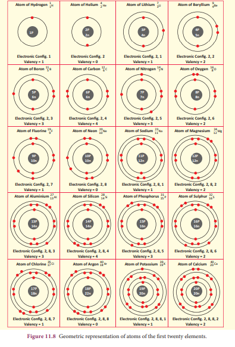
Box item open
Look at the model given below. Make groups of five. Each group can make models of 4 elements by using available materials like balls, beads, string etc.
Image was given below
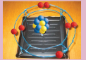
Box item ends
In nature, a number of atoms of elements have been identified, which have the same atomic number but different mass numbers. For example, take the case of hydrogen atom, it has three atomic species as shown below:
Figure 11.9 Isotopes image was given below
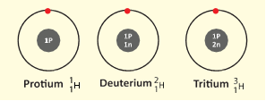
The atomic number of all the three isotopes is 1, but the mass number is 1,2 and 3, respectively. Other such examples are: 1. Carbon C with superscript 12 subscript 6, C with superscript 13 subscript 6
2. Chlorine Cl with superscript 35 subscript 17 Cl with superscript 37 subscript 17
On the basis of these examples, isotopes are defined as the different atoms of the same element, having same atomic number but different mass numbers. There are two types of isotopes: stable and unstable. The isotopes which are unstable, as a result of the extra neutrons in their nuclei are radioactive and are called radioisotopes. For example, uranium-235, which is a source of nuclear reactors, and cobalt-60, which is used in radiotherapy treatment are both radioisotopes
Box item open
Draw the structures of the isotopes of oxygen O 16 and O 18
Atomic number of oxygen = 8
Box item ends
Let us consider two elements calcium Bracket OPEN atomic number 20bracket closed, and argon Bracket OPEN atomic number 18 bracket closed.
Figure 11.10 Isobars image was given below
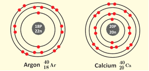
They have Bracket OPEN Figure 11.10 bracket closed different number of protons and electrons. But, the mass number of both these elements is 40. It follows that the total number of nucleons in both the atoms are the same. They are called isobars. Atoms of different elements with different atomic numbers, and same mass number are known as isobars.
Box item open
Thumb rule for isotopes and isobars. Remember t for top and b for bottom.
Isotope: Top value changes - Atomic mass
Isobars: Bottom value changes - Atomic number
Box item ends
Figure 11.11 Isotones image was given below
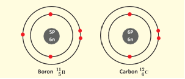
Number of neutrons in boron = 11 minus 5 = 6
Number of neutrons in carbon = 12 minus 6 = 6
The above pair of elements Boron and Carbon has the same number of neutrons but different number of protons and hence different atomic numbers. Atoms of different elements with different atomic numbers and different mass numbers, but with same number of neutrons are called isotones
Box item open
Draw the model of the following pairs of isotones:
Bracket OPEN 1 bracket closed Fluorine and Neon
Bracket OPEN 2 bracket closed Sodium and Magnesium
Bracket OPEN 3 bracket closed Aluminium and Silicon
Box item ends
In the seventeenth century, scientists had been trying to find out methods for converting one substance into another. During their studies of chemical changes, they made certain generalisations. These generalisations are known as laws of chemical combination. These are
1. Law of conservation of mass
2. Law of constant proportions
3. Law of multiple proportions
4. Law of reciprocal proportions
5. Gay Lussac’s law of gaseous volumes
Out of these five laws you have already learnt the first two laws in class 8. Let us see the next three laws in detail in this chapter.
This law was proposed by John Dalton in 1804. It states that, "When two elements A and B combine together to form more than one compound, then different masses of A which separately combine with a fixed mass of B are in simple ratio".
To illustrate the law let us consider the following example. Carbon combines with oxygen to form two different oxides, carbon monoxide Bracket OPEN C O bracket closed and carbon dioxide Bracket OPEN C O2 bracket closed. The ratio of masses of oxygen in C O and C O2 for fixed mass of carbon is 1 is to 2.
|
Mass of carbon Bracket OPEN g bracket closed |
Mass of oxygen Bracket OPEN g bracket closed |
Ratio of O in C O to O in C O2 |
C O |
12 |
16 |
1 is to 2 |
C O2 |
12 |
32 |
|
Let us take one more example, Sulphur combines with oxygen to form sulphur dioxide and sulphur trioxide. The ratio of masses of oxygen in S O2 and S O3 for fixed mass of Sulphur is 2 is to 3.
The law of reciprocal proportions was proposed by Jeremias Ritcher in 1792. It states that, “If two different elements combine separately with the same weight of a third element, the ratio of the masses in which they do so are either same or a simple multiple of the mass ratio in which they combine among themselves.”
Consider the three elements hydrogen, oxygen and water as image shown below:
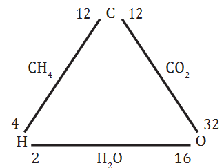
Here, hydrogen and oxygen combine separately with the same weight of carbon to form methane Bracket OPEN CH4 bracket closed and carbon dioxide Bracket OPEN CO2 bracket closed
Compounds |
Combining elements |
|
Combining weights |
|
CH4 |
C |
H |
12 |
4 |
C O2 |
C |
O |
12 |
32 |
Ratio of different mass of hydrogen Bracket OPEN 4g bracket closed and oxygen Bracket OPEN 32g bracket closed that combines with same mass of carbon 4 is to 32 or 1 is to 8 equation 1
Now, hydrogen and oxygen combine to form water Bracket OPEN H2O bracket closed.
Ratio of mass of hydrogen to Oxygen = 2 is to 16 Bracket OPEN or bracket closed 1 is to 8 equation Bracket OPEN 2 bracket closed
From 1 and 2, the ratio is the same as that of the first obtained. Thus, the law of reciprocal proportion is illustrated.
According to Gay Lussac’s Law, whenever gases react together, the volumes of the reacting gases bear a simple ratio, and the ratio is extended to the product when the product is also in gaseous state, provided all the volumes are measured under similar conditions of temperature and pressure.
This law may be illustrated by the following example.
It has been experimentally observed that one volume of hydrogen reacts with one volume of chlorine to form two volumes of Hydrogen Chloride as shown in the figure 11.12
The ratio of volume which gases bears is 1 is to 1 is to 2 which is a simple whole number ratio.
Box item open
Nitrogen combines with hydrogen to form ammonia Bracket OPENNH3bracket closed. Illustrate Gay Lussac’s law using this example. box item ends
When you specify the location of a building, you usually list which country it is in, which state and city it is in that country.
Just like we have four ways of defining the location of a building Bracket OPEN country, state, city, and street address bracket closed, we have four ways of defining the properties of an electron That is four quantum numbers.
Thus, the numbers which designate and distinguish various atomic orbitals and electrons present in an atom are called quantum numbers.
Four types of Quantum number are as follows:
Quantum Number |
Symbol |
Information conveyed |
Principal quantum number |
n |
Main energy level |
Azimuthal quantum number |
l |
Sub shell/ shape of orbital |
Magnetic quantum number |
m |
Orientation of orbitals |
Spin quantum number |
s |
Spin of the electron |
You will learn more details about this in higher classes.
Figure 11.12 One volume of hydrogen react with one volume of chlorine to give two volumes of hydrogen chloride. image was given below
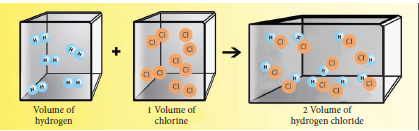
Rutherford’s alpha-particle scattering experiment led to the discovery of the atomic nucleus.
J. Chadwick discovered the presence of neutrons in the nucleus.
Mass number of an element is the total number of protons and neutrons.
Valence electrons are the electrons in the outermost orbit.
Valency is the combining capacity of an atom.
Isotopes are atoms of the same element, which have same atomic number but different mass numbers.
Isobars are the atoms of the different element with same mass number but different atomic number.
Isotones are the atoms of different elements having same number of neutron but different atomic number and mass number.
Atom The smallest component of an element which takes part in a chemical reaction.
Electron A stable subatomic particle with a charge of negative electricity, found in all atoms and acting as the primary carrier of electricity in solids.
Neutron
A subatomic particle of about the same mass as a proton but without an electric charge, present in all atomic nuclei except those of ordinary hydrogen.
Orbitals
Atomic orbitals are region of space around the nucleus of an atom where an electron is likely to be found.
Proton
A stable subatomic particle occurring in all atomic nuclei, with a positive electric charge equal in magnitude to that of an electron.
Quantum numbers
The numbers which designate and distinguish various atomic orbitals and electrons present in an atom.